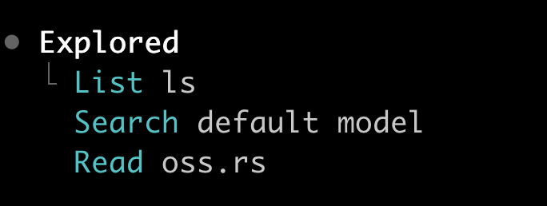

Codex CLIで 加速 するコードリーディング
- Event:
爆速開発LT：Codex編 Vol.2
#Lancers_AI_LT- Presented:
2025/11/26 nikkie（スライド スクショOK）
お前、誰よ？（Python使い の自己紹介）
nikkie（にっきー） @ftnext
好きなことは、Python製ライブラリのソースコードを読むこと
コーディングエージェントに対して強い 思想 を持つ
思想1：コンテキスト、教えて？（10月発表）
思想2：フックでClaude Code自走（11月発表）
お前、誰よ？（続き）
機械学習エンジニア・LLM・自然言語処理（We're hiring!）
宣伝：書籍『サム・アルトマン』、いかがですか？

私とCodex CLI
コードリーディング に使っている
コードはほとんど書かせていない [1]
Codex Cloud でBest-of-Nはごくたまにやる
こいつ、できる
codex-rsにOTel計装のための logfire を追加（10月登壇ネタ）したらビルドエラー
Codex CLIが インストールされたlogfireのソースを読んで 解決
読める、読めるぞ！
OSSのライブラリでどう実装してるか気になったら、cloneして codex 起動
Codex CLIと一緒ならJavaScriptやRustも Pythonと同じくらい 読めてる感覚
実践：今回codex-rsをいくつか読んできました
Codex CLIを使ってCodex CLIの実装（codex-rs）を読んだ
ソースを読んだことで、Codex CLIの仕組みの理解が深まった
環境情報
macOS
codex-cli 0.63.0 [2]
gpt-5.1-codex（デフォルトモデル）
Codex CLIには（Tier上げで余ってる）APIキー（発表準備で2ドル）
調査依頼例 [3]
OpenAI Codexのリポジトリです。 codex-rs/ 下からデフォルトのモデルはどう決まっているかまず教えてください
調査中のCodex CLIの表示

何をしている？
セッション履歴
{"payload":{"type":"reasoning","summary":[{"type":"summary_text","text":"**Planning search for default model**"}],"content":null}}
{"payload":{"type":"function_call","name":"shell_command","arguments":"{\"command\":\"ls\",\"workdir\":\"/.../openai-codex\"}","call_id":"call_Twy3ilTyWGpBGYlOS46CmYj6"}}
{"payload":{"type":"function_call_output","call_id":"call_Twy3ilTyWGpBGYlOS46CmYj6","output":"Exit code: 0\nWall time: 0 seconds\nOutput:\nAGENTS.md\nCHANGELOG.md\nLICENSE\nNOTICE\nPNPM.md\nREADME.md\ncliff.toml\ncodex-cli\ncodex-rs\ndocs\nflake.lock\nflake.nix\npackage.json\npnpm-lock.yaml\npnpm-workspace.yaml\nscripts\nsdk\nshell-tool-mcp\n"}}実は シェルコマンドのみ
調査では
shell_commandツールしか使っていない
{"payload":{"type":"function_call","name":"shell_command","arguments":"{\"command\":\"ls\",\"workdir\":\"/.../openai-codex\"}","call_id":"call_Twy3ilTyWGpBGYlOS46CmYj6"}}
{"payload":{"type":"function_call","name":"shell_command","arguments":"{\"command\":\"rg -n \\\"default model\\\" -n\",\"workdir\":\"/.../openai-codex\"}","call_id":"call_k3OzGR9tqWa8Zs6eG3JkVBCF"}}
{"payload":{"type":"function_call","name":"shell_command","arguments":"{\"command\":\"sed -n '1,200p' codex-rs/common/src/oss.rs\",\"workdir\":\"/.../openai-codex\"}","call_id":"call_lfIgOhegI4MhHP2B6DgDhe31"}}Codex CLIの中のLLMの気持ち
ユーザから「調査して」とプロンプトを与えられた
今いるディレクトリだけは分かる。そこに何があるかすら不明
シェルコマンドを入力すると結果が返ってくるツールだけ がある
要は 調べ方を分かっている ということ
ls から始めてディレクトリ構造を掴む
rg で該当する可能性のあるファイル群を掴む
中身を確認（sed -n '1,200p'）
List, Search, Readを繰り返す
Listの例
% ls
AGENTS.md cliff.toml package.json
CHANGELOG.md codex-cli pnpm-lock.yaml
LICENSE codex-rs pnpm-workspace.yaml
NOTICE docs scripts
PNPM.md flake.lock sdk
README.md flake.nix shell-tool-mcpSearchの例
% rg -n "default model"
codex-rs/tui/src/app.rs
678: .add_error_message(format!("Failed to save default model: {err}"));
codex-rs/core/src/codex.rs
310: /// If not specified, server will use its default model.
codex-rs/common/src/oss.rs
7:/// Returns the default model for a given OSS provider.
codex-rs/common/src/model_presets.rs
42: /// Whether this is the default model for new users.Readの例
% sed -n '300,350p' codex-rs/core/src/codex.rs
.as_deref()
.unwrap_or(compact::SUMMARIZATION_PROMPT)
}
}
#[derive(Clone)]
pub(crate) struct SessionConfiguration {
/// Provider identifier ("openai", "openrouter", ...).
provider: ModelProviderInfo,Codex CLIのコンテキストはどうなってる？
システムプロンプトは？ 他のツールは？
👉 Responses API のリクエストを見る [5]
Responses APIのリクエスト
全容 https://gist.github.com/ftnext/7b0caeec056188da387e8333e30be749
システムプロンプト（100行） gpt_5_codex_prompt.md
prefer using
rgorrg --filesrespectively
Codex CLIのツールは shell_command に加えて
update_planapply_patchview_imageMCP関連3つ
Gemini CLIと比べると
export const GLOB_TOOL_NAME = 'glob';
export const WRITE_TODOS_TOOL_NAME = 'write_todos';
export const WRITE_FILE_TOOL_NAME = 'write_file';
export const WEB_SEARCH_TOOL_NAME = 'google_web_search';
export const WEB_FETCH_TOOL_NAME = 'web_fetch';
export const EDIT_TOOL_NAME = 'replace';
export const SHELL_TOOL_NAME = 'run_shell_command';
export const GREP_TOOL_NAME = 'search_file_content';
export const READ_MANY_FILES_TOOL_NAME = 'read_many_files';
export const READ_FILE_TOOL_NAME = 'read_file';
export const LS_TOOL_NAME = 'list_directory';
export const MEMORY_TOOL_NAME = 'save_memory';Codex CLIの実装は、想像とはぜんぜん違った
Codex CLIは ツールを絞って いる
コードベースの調査は
shell_commandでやってのける裏のモデル（gpt-5.1-codex）が調査方法を分かっている
もう1つ /mention
Slash Command の1つ
@になるだけ。ファイルパスのヒントが出て入力しやすい
gpt-5.1-codex たちはファイルパスがあればReadするのだろう
Gemini CLI
@でファイルパスを指定する機能がある指定した ファイルのコンテンツ がモデルに 渡されて いた
Codex CLIはこれをやっていない（きめ細かくReadしたいから？） [6]
まとめ🌯 Codex CLIで加速するコードリーディング
Codex CLIはコードベースを シェルコマンド （
shell_commandツール）だけで巧みに調査するList・Search・Readの繰り返し。gpt-5.1-codexは超優秀なエンジニア感
ファイルパスや行数を指定してより調べやすく（ファイルに書き出して依頼してます）
ご清聴ありがとうございました
Enjoy code reading with Codex!
Appendixが続きます
他の依頼事項
OpenAI Codexのソースコードが codex-rs 下にあります。codexを使うと、$HOME/.codex/sessions/yyyy/mm/dd にJSONLファイルができているのですが、これはどのような処理で作られていますか？
OpenAIのCodex CLIのリポジトリです。Sessionについて、OpenAIのエンドポイントにどのようなリクエストを送っているかを知りたいです。codex-rs/下にある実装を調査してください
OpenAI Code CLIの実装が codex-rs/ 下にあります。Slash commandの中の/mentionってどんな実装ですか？
実装を見て同意見です
ここ数日、敢えてGemini 3だけで生活してみたけどまだ同じ感想です。
— 炎鎮🔥 - ₿onochin - (@super_bonochin) 2025年11月24日
前と比べるとかなり良くなってるのは事実なんだけど、それでもなんか『勢いに任せて玉石混交の情報をぶちまけてるだけ』というのが変わってない。
GPTが『賢い』のに対してGeminiは『賢い情報も含んでる』みたいな感じ。… https://t.co/5hcT1n0XCA